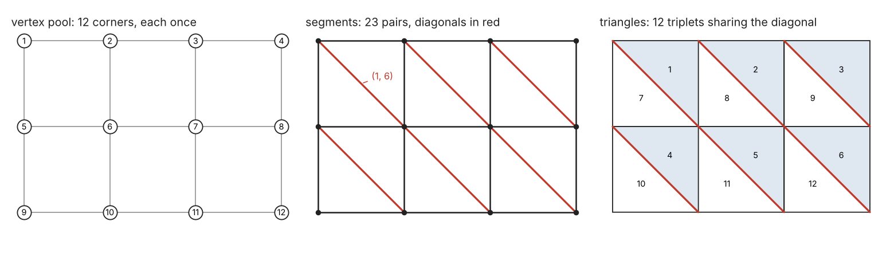
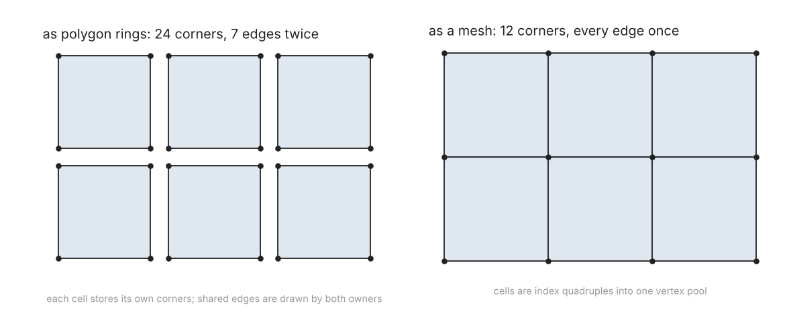
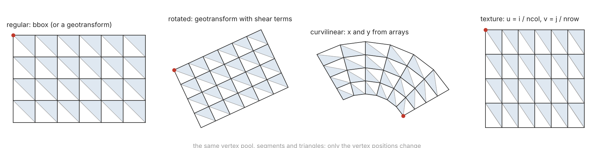
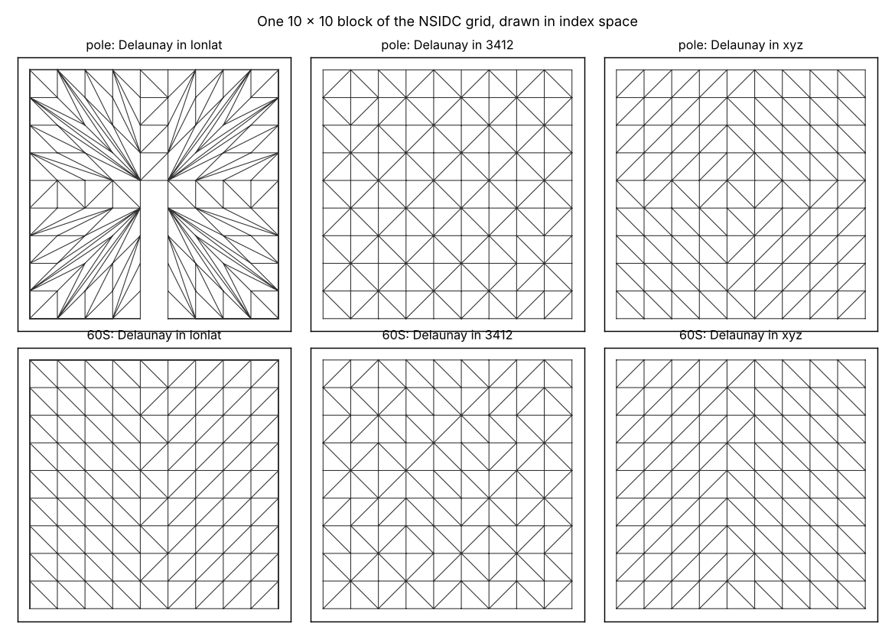

trianglewins / grids
Grids as meshes: a raster is a mesh, and Delaunay in what?
A gridded dataset is a mesh that never had to say so. A raster
defined by ncol, nrow and a bbox (or an affine
geotransform) already holds every table a triangle mesh is made of: a
vertex pool, segments as vertex pairs, triangles as vertex triplets.
None of them is stored, because all of them are arithmetic on the cell
index. The first half of this page builds that up from one rectangle.
The second half asks what happens when a grid is triangulated as loose
points instead, and the index is thrown away. The companion book Regular in what?
argues that a grid is regular, rectilinear or curvilinear only in a
frame. A triangulation is Delaunay, has straight edges and
interpolates linearly only in a frame too. "Delaunay in what?" is the
same question.
One rectangle is two triangles
Split a rectangle along a diagonal and you have two triangles. Counted as a mesh:
- 4 vertices, the corners;
- 5 segments, the four sides and the diagonal, each a pair of vertex ids;
- 2 triangles, each a triplet of vertex ids.
The two ends of the diagonal belong to both triangles, and they are stored once. Each triangle refers to them by id, so there is no duplicated coordinate to drift, and the diagonal is visibly one shared edge, not two coincident ones. That is the whole idea of an indexed mesh: coordinates live in one vertex pool, and everything else is a table of indices into it.
A raster is all three tables already
Put rectangles side by side in rows and columns and the tables grow,
but they never need to be written down. Number the cell corners row by
row from the top left, with i the column and j
the row, as in a GDAL geotransform. The corner (i, j) has
id
v(i, j) = j * (ncol + 1) + i + 1and cell (i, j) has corners a = v(i, j),
b = v(i + 1, j), c = v(i + 1, j + 1) and
d = v(i, j + 1). Its two triangles are
(a, b, c) and (a, c, d), sharing the diagonal
(a, c). Every vertex, segment and triangle of the grid
comes from that one formula.

For the 3 x 2 grid in the figure, bbox 0 0 3 2:
| table | rows | from ncol and nrow |
|---|---|---|
| vertex pool | 12 | (ncol + 1)(nrow + 1) |
| segments | 23 | ncol(nrow + 1) across, (ncol + 1)nrow down, ncol nrow diagonals |
| quads | 6 | ncol nrow |
| triangles | 12 | 2 ncol nrow |
The vertex coordinates come from the bbox:
x = xmin + i (xmax - xmin) / ncol and
y = ymax - j (ymax - ymin) / nrow. The counts also satisfy
Euler's formula for a disc, V - E + F = 1 (12 - 23 + 12), the planar
bookkeeping that Polygons
are just lines leans on.
survey/grids/grid-mesh.R
builds all four tables in base R from ncol,
nrow and a bbox, and checks the counts, that no segment
repeats, that every triangle edge is a segment, and Euler. The core is a
few lines:
vid <- function(i, j) j * (ncol + 1) + i + 1
a <- vid(ci, cj); b <- vid(ci + 1, cj)
c <- vid(ci + 1, cj + 1); d <- vid(ci, cj + 1)
quad <- cbind(a, b, c, d)
triangle <- rbind(cbind(a, b, c), cbind(a, c, d))So a raster is a mesh. Six numbers (ncol,
nrow and the bbox), plus a CRS, are a complete, compressed
description of its vertex pool and its topology.
Rings store it the long way
Polygonizing a raster, cell by cell, throws that structure away. Each cell becomes a closed ring with its own corners, so every interior corner is written up to four times, and every interior edge twice, once by each cell that owns it.

| form | coordinates stored | interior edges |
|---|---|---|
| polygon rings, closed | 5 ncol nrow (30 here) | each twice (7 here) |
| indexed mesh | (ncol + 1)(nrow + 1) (12 here) | each once |
| raster | none: six numbers | implied by the index |
Getting the shared edges back from the rings is real work: matching coordinates that are equal only up to rounding. That is the problem Drawing each boundary once deals with for polygon layers in general. The grid never had it.
Topology from the index, geometry from the transform
The tables above never used a coordinate. The vertex pool, the
segment pairs and the triangle triplets are fixed by ncol
and nrow. Only the position of each vertex depends
on how the grid sits in space, and that is the one thing that changes
between kinds of grid.

- Regular: positions from a bbox, or a geotransform without rotation.
- Rotated or sheared: positions from a full six-term geotransform. Still affine, still six numbers.
- Curvilinear: positions from two arrays, x and y per corner. The geometry is now data, but the topology is still the index.
- Texture:
u = i / ncol,v = j / nrow. These are the texture coordinates of the vertices, and they are the same index again.
The texture case is how a GPU draws a raster. It draws a triangle
mesh, the image is sampled as a texture through each vertex's
(u, v), and those texture coordinates come from the cell
index. Reprojecting a raster this way moves the vertex positions into
the target frame and leaves the texture coordinates and the triangles
alone: the mesh is warped, the pixels are not touched. A coarse mesh
carries a fine image. How coarse it can be depends on how straight the
cell edges stay in the target frame (see curves). WebGL raster viewers use this, for
example mdsumner/ortho-cog-viewer,
which reprojects COG tiles by moving mesh vertices and keeping their
UVs.
Corners or centres
Where the values sit decides which mesh you have.
- Values as cell averages (PixelIsArea, most imagery and gridded model output) are a field on the mesh's faces. The vertex pool is the cell corners: a 256 x 256 raster has 257 x 257 vertices.
- Values at sample points (PixelIsPoint, a DEM read as heights) are a field on the mesh's nodes. The vertex pool is the cell centres: a 256 x 256 raster has 256 x 256 vertices and 255 x 255 quads between them.
The two meshes are half a cell apart and differ in size by one in each direction. Mixing them up is the usual source of half-pixel offsets between a raster and a mesh made from it. The grid words "centre" and "corner" are the mesh words "face" and "node".
The diagonal is a choice
Bilinear interpolation in a cell is not linear on either pair of
triangles, and the two splits give different values at the cell centre
(see notes). The split
(a, b, c), (a, c, d) used above is one
convention; (a, b, d), (b, c, d) is the other.
A split is a choice to record, not a detail to leave to the mesher. The
next section shows a mesher making it anyway.
Delaunay in what?
Triangulate the points of a grid instead of splitting its cells, and the index is thrown away. What comes back depends on the frame the mesher saw. The figure takes one 10 x 10 block of the NSIDC 25 km south polar stereographic grid (EPSG:3412, regular in that frame), triangulates the cell centres three ways, and draws every result in the grid's own index space:
- in longitude and latitude, treated as planar x and y;
- in EPSG:3412, the grid's native frame;
- in geocentric xyz, as the convex hull of unit vectors, which is the spherical Delaunay triangulation (see notes).

| Block | Frame | Triangles | Inside one cell | Same as xyz |
|---|---|---|---|---|
| around the pole | lonlat | 182 | 31% | 3% |
| 3412 | 162 | 100% | 56% | |
| xyz | 162 | 100% | 100% | |
| near 60S | lonlat | 186 | 87% | 4% |
| 3412 | 162 | 100% | 52% | |
| xyz | 162 | 100% | 100% |
"Inside one cell" counts triangles whose three vertices lie in one index cell, that is, halves of a grid quad. A 10 x 10 block has 81 cells and so 162 halves.
Three things show up.
- Longitude and latitude is the wrong frame, badly near the pole. Around the pole the block's longitudes run all the way round, the antimeridian cuts it open, and most triangles fan across many cells. Near 60S every quad half is there, but the block is not convex in longitude and latitude, so 24 extra sliver triangles fill in its concave edges.
- The native frame and the sphere agree on the cells. In EPSG:3412 the cells are squares; on the sphere they are nearly squares. Both give exactly one pair of triangles per cell.
- They do not agree on the diagonals, and neither is wrong. The four corners of a square are on one circle, so both diagonals are equally Delaunay. Stereographic projection maps circles on the sphere to circles on the plane, so the tie survives on the sphere as well. Which diagonal each run picked is decided by rounding, which is why "same as xyz" is about half. This is the diagonal choice from The diagonal is a choice, arriving uninvited.
A regular grid can be recovered by finding the frame it is regular in. A triangulation built in the wrong frame cannot: it is simply a different triangulation. So for meshes the frame is a decision made before meshing, not bookkeeping added afterwards.
The figure and numbers come from survey/grids/figures.py (numpy, scipy, matplotlib, pyproj).
What survives a change of frame
| Property | Survives a transform? |
|---|---|
| connectivity (which triangles touch) | yes |
| regular, rectilinear, curvilinear | sometimes: a grid can be regular in another frame |
| straight edges | no: straight in one frame is curved in another (curves) |
| Delaunay (empty circumcircle) | no, except under circle-preserving maps such as stereographic |
| area and angle bounds | no: in longitude and latitude they are in degrees |
| linear interpolation | no: barycentric weights are linear in the mesh's coordinates |
Topology survives; geometry does not. Transforming a mesh keeps its triangles and is lossless. Claims about their shape have to be made again in the new frame.
Where else grids and triangles meet
Inverting a curvilinear grid. Finding which cell of a curvilinear grid contains a point is a point location problem. The grid's own triangulation (quads split, in the target frame) answers it directly: find the triangle, and its barycentric weights give fractional (i, j). That is a triangulation whose vertices carry their index as an attribute, which is exactly what the harness's attribute carry check measures.
Reprojection meshes. GDAL's approximate transformer and the browser raster reprojectors (deck.gl-raster, OpenLayers) build an error-bounded triangle mesh in the target projection. New vertices there should be evaluated through the transformation, not interpolated from the triangle they fall in, and rims, poles and seams are better inserted as constraints than found by refinement (notes).
Swaths. Satellite swaths and tripolar ocean grids are curvilinear in every frame, so there is no frame to retreat to. Triangulate them in geocentric xyz, or in a local projection per scene.
Discrete global grids. Icosahedral grids start from 20 spherical triangles, HEALPix and the cubed sphere from quads, and their vertices and neighbours are computed from the cell id. They are meshes whose triangulation is a formula, as a regular grid is a curvilinear grid whose positions are a formula.
Coverages. The harness cases
grid3_doubled and grid3_dedup are a 3 x 3
regular grid written out as polygons, with shared edges given twice or
once. Recovering those shared edges is work a mesher has to do, and work
the grid never needed: its identity was computed from the index.
Grid cases. grid_quads,
grid_frames_lonlat, grid_frames_3412 and
grid_diagonal put this page's 60S block (and a unit grid)
in the harness, and tw_in_cell() judges each backend's
triangles in the grid's index, as the figure does.
Tools for the index side
- hypertidy/vaster: the index arithmetic with no data at all. Cells, rows, columns and coordinates from an extent and a dimension, which is everything above except the tables themselves.
- hypertidy/quadmesh: builds the indexed quad mesh (and its triangle split) from a raster, with the shared vertex pool, so a raster can be plotted as a surface, textured, or reprojected by its vertices.